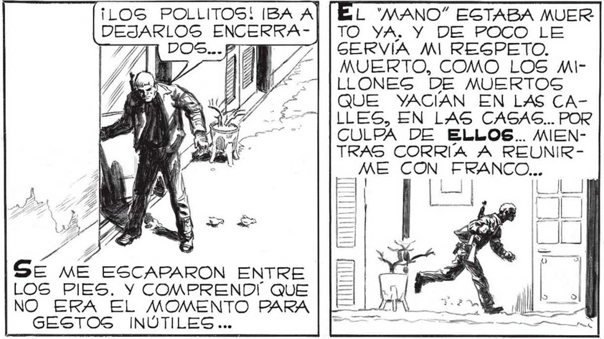
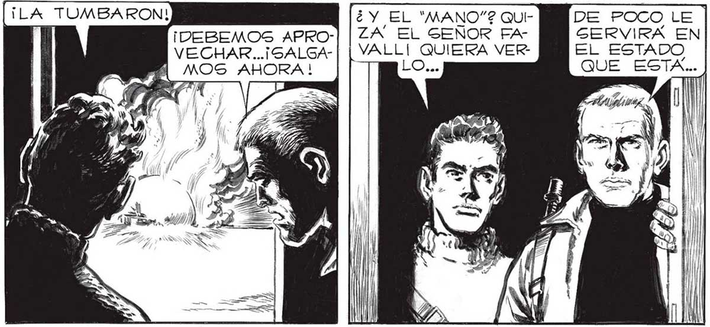
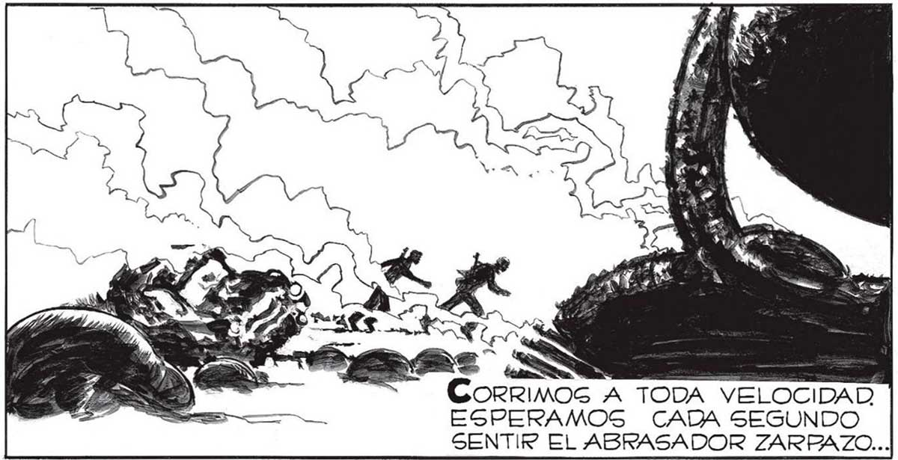

¡DEBEMOS APRO-| | 24 El SENOR FAVECHAR...¡SALGA- ii VERLO... I MOS AHORA ! ¡LOS POLLITOS! IBA Al DEJARLOS ENCERRA-||TO YA. Y DE POCO LE AT | 7| | SERVIA Mi REGPETO. MUERTO, COMO LOS MILLONES De MUERTOS QUE YACIAN EN LAS CALLES, EN LAS CASAS... POR CULPA DE ELLOS... MIENTRAS CORRIA A REUNIR¿ME CON EU p Se ME ESCAPARON ENTRE LOS PIES. Y COMPRENDÍ QUE NO ERA EL MOMENTO PARA GESTOS INÚTILES ... MEJOR... | PASEMOS, ANTES DE QUE VUELVAN A ENVIAR OTRA BOLA | L "MANO” ESTABA MUER DE POCO LE GERVIRA EN EL ESTADO QUE ESTA... .. PERO TAMPOCO Pope-|| MOS DEJARLO ASÍ... ..TAMBIÉN YO, COMO EL MANO” SENTI UN ODIO DESESPERADO... PERO TAMPOCO EG TIEMPO AHORA DE ODIAR... AHORA ES TIEMPO DE LUCHAR... CoOrrIMOG A TODA VELOCIDAD ESPERAMOS CADA SEGUNDO SENTIR EL ABRASADOR ZARBAZO... POR LO MENOS LE CERRARÉ LA PUERTA... PENGAR QUE VINO DE TAN LEJOS PARA MORIR e ASÍ. ñ ñ e LGO SE MOVIO A MIG PIES... NADA, FRANCO, NO ME HAGAS CASO... ¿ESTARAN LOS “CASCARUDOS" EN LA OTRA ESQUIA? ESTADIO NO DIGPARAN MAS... ... DEL LANZARRAYOS, O EL SÚBITO ENCANDILAMIENTO DE UN RAYO FPARALIZANTE. PERO NQ NADA ENTORPECIO NUESTRO AVANCE. NI SIQUIERA ALGÚN ENJAMBRE DE *CASCARUDOG”,


